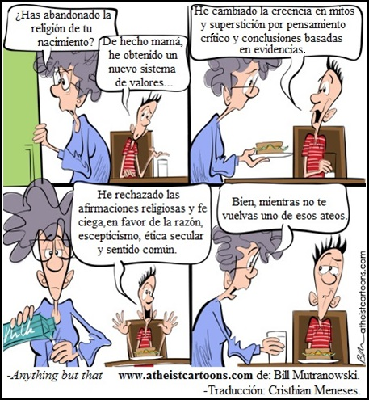

Amnesia controlada y el eterno presente

Por siglos se ha hecho un paralelismo erróneo e hipócrita entre cristianismo y moralidad, pues ha sido el cristianismo el implicado en exterminios humanos, llamados “sacrificios” porque así, efectivamente: lo manda Dios. También ha sido el cristianismo el implicado en las ideas e historia nazi, en exterminar masas para obtener poder. Los adventistas, mormones, bautistas o de cualquier denominación evangélica, siempre se empeñan en inventar que quien no crea en la mitología cristiana o de su dogma, va por mal camino. Esto es una retórica sin sentido y falsa. Lo más curioso es que por el lado creyente la experiencia ya ha demostrado su crueldad, su avaricia… la manipulación y el llanto del mundo conforman el currículo del cristianismo (entre otras religiones), pero discursos vacíos tergiversando la historia son el diezmo de cada día en aquellos quienes tienen amnesia controlada. Quieren olvidar un pasado que no perdona.
En 1572, el 24 de agosto, piadosos y motivados cristianos franceses mataron un aproximado de 100.000 hugonotes, acto amoroso y divino que para el cristianismo resultó en un armonioso repique de campanas y felicidad celestial. El desprestigio a María Magdalena desde la iglesia, inventando que era una prostituta, para poder agregar ingredientes al perturbado morbo y temor del cristianismo hacia el sexo. El castigo al médico Andrea Vesalio, porque en su Fábrica del cuerpo humano (1543) fue uno de los primeros en desmontar la patética historia sobre el mito infantil de la costilla de menos que tenemos los hombres, debido a que fue usada para crear a Eva. La inquisición se deleitó con Vesalio, pero Adán y Eva nunca existieron, ni el Diablo y demás imaginarios, y además, nuestra existencia es la que experimentamos, gracias al proceso evolutivo. Inocencio III exterminó a los cátaros, y no precisamente con caricias. Tenemos además todo el salvajismo de las cruzadas, conversión forzada a indígenas como evangelización de América, su complicidad con las dictaduras del siglo XX en Latinoamérica y Europa, persecución de judíos, cientos de años con su bella inquisición, su antiguo y actual ataque a la liberación femenina, a la democracia, a la libertad religiosa, a la libertad de prensa, a la búsqueda del conocimiento y al divorcio, entre otros “males”. Pero ya conocen la historia y actualidad: es la erudición cristiana castigando contrincantes y verdades.
El cristianismo también se enamoró y comió helados con el fascismo de Benito Mussolini y el español Francisco Franco, coqueteó con Pinochet y, continúe contando. Para no extender tanto, vamos al inicio. Otro genocida, el emperador Constantino, quien fue su amiguito fiel y colaborador. Así es como tenemos hoy el cristianismo, después de asesinar a miles de personas. ¿Cómo es que siguen mintiendo diciendo que la religión, los templos, sus libros, los religiosos, los pastores, curas… son una santidad? Y peor aún cuando sabemos que “santidad” no implica nada bueno más allá del papel. Los llamados “santos” y “santas” no entran dentro de la acepción de “libres de culpa” y “buen ejemplo”, pues han sido seres que repudian el razonamiento y las libertades, así como han sido misóginos, difamadores y profundamente discriminantes, sectarios e irracionales.
Steven Weinberg, el nobel de física, expresó una realidad inmortal con una lucidez tremenda. Es una verdad que se puede observar, evidenciar y analizar desde nuestra infancia, para luego confirmar el resto de la vida adulta: la religión hace que personas buenas actúen mal. Weinberg lo entendió claro y conciso:
“La religión es un insulto para la dignidad humana. Con o sin ella, habría gente buena haciendo cosas buenas, y gente malvada haciendo cosas malas, pero para que la gente buena haga cosas malas, hace falta religión”.
Todas las personas tienen derecho a creer lo que deseen, pero no deben pretender pasar sus suposiciones, su fe, como una explicación de la realidad. Sus creencias solo son resultado de la cultura dónde se les adoctrinó. Quieren imponer sus creencias en filosofías gastadas, refutadas por la existencia y de moral bastante lamentable. Tampoco deberían, si no quieren exponerse más al ridículo, seguir utilizando el disfraz del discurso, para decir, sin gracia alguna, que si no se cree en dioses o en religiones: no hay camino, vida ni valor (sin embargo, es el sermón de cada día). Está demostrado a través de la vida y, la realidad histórica, que la comunidad secular, de librepensadores, de no creyentes, no está enterrada en caos… al contrario, goza de gran desarrollo. Esta es otra realidad que pone furiosos a los creyentes: las sociedades menos religiosas, las que no rigen su vida pensando en la dictadura de Dios, son las que están mejor. Sam Harris desató nuevamente la ira de muchos, cuando en su manifiesto del 2005, recordó esta verdad y habló con mucha propiedad desde los datos de desarrollo humano, desde su elocuente forma de llevar un mensaje, y su conocimiento científico y filosófico para reabrir el debate que deja en silencio a los que repiten la mentira: “Una sociedad sin Dios está mal” y “sin Dios nada”. Dos expresiones llenas de desconocimiento. Enfrentemos un extracto de la realidad reiterada en esa ocasión por Harris 1:
“Países como Noruega, Islandia, Australia, Canadá, Suecia, Suiza, Bélgica, Japón, Países Bajos, Dinamarca y el Reino Unido se encuentran entre las sociedades menos religiosas de la Tierra. Según el Informe de Desarrollo Humano 2005 de las Naciones Unidas, dichos países son también los más sanos, como indican las medidas de esperanza de vida, alfabetismo adulto, ingresos per cápita, desarrollo educativo, igualdad entre sexos, tasa de homicidios y mortandad infantil. A la inversa, las 50 naciones que ahora se encuentran en el escalafón más bajo en términos de desarrollo humano son fuertemente religiosas”.
Esa realidad sigue siendo así, y para incomodidad de los creyentes, cada sociedad que está mejor educada, que conoce más, ya no necesita creencias, porque el conocimiento las va descartando. Siempre hemos descubierto cómo va funcionando el mundo y las relaciones en este hogar del sistema solar, y al ir descubriendo ya no le otorgamos la lluvia, las enfermedades, la vida y diferentes aspectos: a creencias. Dentro del primer semestre del 2014, se entregaron los resultados de los países donde mejor se vive, los que crecen más, los que sobresalen en mejoras sociales, estudio realizado por la Universidad de Harvard. Suiza e Islandia están en los primeros puestos, por ejemplo. Las sociedades que están mal son altamente religiosas, como algunos países de África y muchos que ya están tratando de corregir esto en el continente americano. El creyente debe entender y no ser deshonesto, reconocer que no se trata de opiniones, sino de realidades. El cristianismo tiene mucha culpa en el declive de nuestro mundo, pero también es cierto que cristianos y otros religiosos se han opuesto a las guerras y desastres que sus creencias han creado, pagándolo con su vida, sin embargo, también lo han hecho personas no creyentes, y es gracias a esa rebelión que hoy el cristianismo se quedó sin armas poderosas. A pesar de toda la abrumadora evidencia en cada campo del conocimiento, los dirigentes y jerarcas religiosos lo mantendrán enfermo diciéndole que necesita creer en algo, pero no en algo real o razonable; a Ud. lo mantendrán enfermo de miedo a un ser supremo, para vendérselo, y esa, esa será la medicina. Bueno, vaya que han tenido éxito suministrando curas, aunque sean homeopáticas, claro, por eso el éxito es en distribuir, no en lograr resultados. En consecuencia, muchos enseñan a creer ciegamente: La fe, la obediencia sin pruebas, porque es más fácil creer y decir ¡sí!, antes de recurrir a la tarea de pensar e investigar para decir: Pero… o simplemente: no. El intelecto de Carl Sagan lo entendió muy bien al expresar:
“El primer pecado de la humanidad fue la fe, la primera virtud: La duda”.
¿Les parece si vemos otra calumnia que también quieren tapar sin éxito? Bien, recordemos que Dios, sí, DIOS, da gala de sus atrocidades en cuanto al tema de las relaciones amorosas y sexuales en todo el pentateuco. Veamos un botón de muestra. En el capítulo 22 del Deuteronomio nos enteramos que Dios está dando las órdenes amables a un tipo sin educación, le dice cómo se debe tratar el castigo en las relaciones sexuales y pasando rápidamente por el morbo al indicar que la mujer debe mostrar las señas de su virginidad al pueblo, extendiendo su vestido para que los ancianos observen sus “vergüenzas”, –así se le llama a los genitales en esta religión reprimida y enferma con el tema sexual–, y corroboren si es virgen o no. Pasando esto, que es muy bueno, porque es la palabra amorosa de Dios, llegamos a la conclusión tan piadosa y comprensiva:
“Si resultare ser verdad que no se halló virginidad en la joven, entonces la sacarán a la puerta de la casa de su padre, y la apedrearán los hombres de su ciudad, y morirá, por cuanto hizo vileza en Israel fornicando en casa de su padre; así quitarás el mal de en medio de ti”.
—Deuteronomio 22:20-21.
Es una orden de Dios, algo digno de un ser omnisciente, ¿o no? Pero recuerden que Dios no fue a la escuela, por eso no se le podía ocurrir algo relacionado con educación sexual o algo pedagógico para conciliar con sus imperfectas hijas e hijos hechos a imagen y semejanza del perfecto Todopoderoso. Esto nos lleva a otra de las deliciosas contradicciones y horrores en las facetas de Dios hijo, Dios hecho hombre contra Dios Padre. El Hijo unigénito a veces olvidaba que él vino para cumplir la ley, no para invalidarla (Mateo 5) ¿A qué se debe esta referencia? Simple, al recordar esa trágica ley ordenada por DIOS, algunos creen que tienen una carta debajo de la manga con la historia de la mujer adúltera en el nuevo testamento. Pero no es así. Aunque se debe reconocer que con Jesús se ve humanismo en este reto, la alegría dura poco, pues la Biblia se condena a sí misma con todas las aberraciones que contiene. “Amar y revelarse ante la ley”, no es más que un alivio efímero. Además, no se necesita creer en dioses, o ser Perseo, Apolonio de Tiana o un Dalai Lama, para saber qué daña y qué no lo hace; al contrario, la religión sabe muy bien cómo hacer daño, su historia es muy amplia en estos actos. Vamos entonces a esa excelente lección que otorgan a Jesús, la cual es algo de sentido común, humanitario y comprometido, pero que ya se aplicaba mucho antes, desde que el altruismo y la herencia moral en el código genético iban en la celebración del proceso evolutivo, moldeado por la educación social. La situación de Jesús y la mujer adúltera va de la siguiente manera:
“Entonces los escribas y los fariseos le trajeron una mujer sorprendida en adulterio (…) en la ley nos mandó Moisés apedrear a tales mujeres. Tú, pues, ¿qué dices? (…) y les dijo: El que de vosotros esté sin pecado sea el primero en arrojar la piedra contra ella (…) ellos, al oír esto, acusados por su conciencia, salían uno a uno (…) Enderezándose Jesús, y no viendo a nadie sino a la mujer, le dijo: Mujer, ¿dónde están los que te acusaban? ¿Ninguno te condenó? Ella dijo: Ninguno, Señor. Entonces Jesús le dijo: Ni yo te condeno; vete, y no peques más”.
—Juan 8:3-11
Mil puntos para Jesús -debo resaltar- ya era hora que en esa historia alguien parara a esos ineptos armados de piedras en sus manos y en sus cabezas cavernícolas. Pero lástima que también dure poco la alegría, porque la razón y el pensamiento demuestran muchas inconsistencias que el creyente no ve, ya que le enseñaron que debe aceptar lo que se escribió y lo que se dice, pues es de autoridad celestial. Se debe aceptar tal como lo enseñó Martín Lutero: quitándole los ojos a la razón. Muchos justifican su adaptación caprichosa de los hechos con la falacia del libre albedrío, inventan qué es o qué no es de Dios, o en qué influyó o estuvo ausente el omnipresente. Eso demuestra una impotencia terrible, y como es evidente, una deliciosa contradicción. Analicemos:
Primero: La ley vino de Dios dictada a Moisés, lo puede ver a través del pentateuco, y con la muestra que se expuso líneas arriba: ordenado por Dios (lea el Deuteronomio completo), no fue Moisés quien mandó apedrear a tales mujeres, el pobre tipo solo dictaba lo que le entregó un Ser Supremo, ¡fue Dios quién mandó!, entonces, el primer punto que daña la acción heroica, es que el mismo que dictó, vino a decir que ya no se hiciera. Aunque se tardó demasiado, ¿no? ¿A cuántas mujeres hubiese salvado si para empezar no hubiera dado esas leyes?; muchas más se hubiesen salvado si no hubiera esperado tanto para venir.
Segundo: La mujer fue perdonada en el pasaje, pero lo que no terminan de entender los creyentes, es que el perdón de Jesús y sus brazos abiertos al paraíso, aunque están marcados por arrepentirse y recibir la gracia, lo que prevalece ante todo, es nuestra salvación y valoración, solo si cree que Jesús es el salvador, el enviado de Dios para que quien crea de corazón que resucitó de entre los muertos, sea salvo. Ni el buen samaritano se salva. Ahora, supongamos que luego de esto la mujer fue hinduista el resto de su vida, después de no tener más contacto con Cristo debido a la ya conocida muerte de incoherencias trágicas que cuenta la leyenda bíblica. Entonces ella se condenó, pobrecita. Esto se ha demostrado con las citas de la propia Biblia y el proceder de los cristianos todos estos años. En ambos testamentos, haga lo que Ud. haga, reciba lo que reciba, la llave es creer en ese Dios específico porque es, vamos a la antífona: “Verdadero y Único”. Y no podría ser de otra manera, ¿o es que vamos a olvidar que él no vino a traer la paz, pero sí la espada, la disensión y la condenación acusándonos con papi? Vamos a repetirlo y agregamos el preámbulo:
“A cualquiera, pues, que me confiese delante de los hombres, yo también le confesaré delante de mi Padre que está en los cielos. Y a cualquiera que me niegue delante de los hombres, yo también le negaré delante de mi Padre que está en los cielos.
No penséis que he venido a traer paz a la tierra; no he venido para traer paz, sino espada”.
—Mateo 10:32-34.
Quien no siga a Cristo merece quemarse por siempre en el infierno, quien no reconoce a Jehová: es un pecador, un necio, un ser que no merece nada. Este Dios disfruta castigando a quien no le rinde pleitesía, a quienes no reciben su enseñanza. Si el Todopoderoso no logra que su creación lo adore, vendrán las pestes y plagas, o esas sacudidas de pies en señal de repudio, tal como Jesucristo enseñó a los discípulos cuando eran rechazados en los pueblos u hogares, sitios a los cuales él (Dios) tampoco iría, sino que enviaría un amoroso detalle:
“Y si alguno no os recibiere, ni oyere vuestras palabras, salid de aquella casa o ciudad, y sacudid el polvo de vuestros pies. De cierto os digo que en el día del juicio, será más tolerable el castigo para la tierra de Sodoma y de Gomorra, que para aquella ciudad”.
—Mateo 10: 14-15.
Los creyentes exigen que no nos metamos en sus ilusiones, pero no vacilan en meterse en los gustos y vivencias de los no creyentes o creyentes de otras fantasías. Personas entregadas a la creencia hablan sin conocimiento para seguir desafiando a la realidad y para seguir siendo deshonestos con las evidencias que tenemos. Jesús Adrian Romero estuvo en CNN en mayo del 2012, en el programa de entrevistas: Cala. Él le dijo al periodista Ismael Cala “que la necesidad de Dios es la que llena el corazón”, al igual que el papa o cualquier líder cristiano, expresó basado en la Biblia, que se necesita una relación con Dios para mejorar. Ismael Cala no invita a personas críticas para poner en balance los consentidos programas que ha hecho con sacerdotes, ufólogos, místicos y un número considerable de líderes como Marcos Witt. Después de ver la transmisión de Cala de su especial en México, en el 2014, con Jaime Maussan, quedó más claro que se deberían invitar personas que expliquen muchos argumentos que, con entrevistas complacientes ya realizadas, le han dejado confusión a la audiencia y alimento a un pensamiento cerrado para muchos.
Por ejemplo, con Maussan se expuso que hay gente petulante que cree que estamos solos en el universo y que considera que porque nosotros no podemos visitar otros planetas, no significa que no hubiese vida que sí pudiera venir acá. Eso es una incoherencia, es desconocimiento, pues Maussan es cristiano católico y admirador de la virgen de Guadalupe, como él mismo lo dijo. Si él es cristiano, no debe decir eso, pues en el cristianismo nosotros somos la base de la creación, el centro de todo, y los dueños de otras formas de vida. Nunca se menciona vida extraterrestre, es muy simple, bíblica y doctrinalmente verificable.
En muchos sectores siempre hay gente tratando de hacer pasar por ciencia o evidencia lo que no lo es. Y esto no se limita a líderes de instituciones oficialmente formadas. Rhonda Byrne y su falacia de ‘El Secreto’, Deepak Chopra, Paulo Coelho… son algunos de los charlatanes que más desviaciones de razonamiento causan en la sociedad. Se muestran como conocedores de lo que en realidad no tienen ni idea. Utilizan el desconocimiento y las ansias de creer en fantasías, para ponerle chispas de palabras científicas y hacer pasar por ‘sabiduría’ lo que no es más que una compilación de argumentos desde la ignorancia. Es por eso que el camino es cuestionar todo y basarnos en pruebas, nutrir nuestro conocimiento en contra de toda clase de saboteador de la honestidad intelectual.
Nuestra evolución se ha logrado luchando contra las corrientes políticas y religiosas que ponen al dogma encima del ser humano, para colocarse ellos como dueños de la verdad pasando por encima de la evidencia. En la actualidad no pueden asesinar, ese poder bestial de antaño lo perdieron gracias al triunfo de las rebeliones, la ilustración, la razón y la perseverancia. Sin embargo, siguen atacando en el eterno presente con su oposición a la ciencia, al avance, a la búsqueda de la verdad, al librepensamiento, siguen con su homofobia, con los abusos sexuales, su imposición de dogmas, sus juicios incoherentes, su machismo, su fracaso moral, y su ataque irracional contra los activos sectores laicos, humanistas seculares, racionalistas, escépticos y librepensadores.
Si tiene un “Dios” personal, déjelo para Ud. si así lo necesita. No lo use para atacar y humillar, para ofender la inteligencia. El problema es cuando toma una excusa fútil para sentirse bueno y superior, acto seguido: lo llama Shivá, Alá, Cristo, Horus o Krishná y dice que esa es la verdad, sin prueba alguna y con libros incoherentes, mitológicos y llenos de odio, machismo y salvajismo; libros de triste proceder, inspirados, escritos, recopilados y utilizados por hombres de escaso conocimiento y sensibilidad. El problema es la sangre, la discriminación, los ataques y las mentiras que trae toda esa mitología. Todas las religiones se pelean por adquirir nuevos creyentes, suponen inocentemente que su Biblia, Corán y demás escrituras son incuestionables, creen que su Dios es el verdadero. No pueden demostrar nada de lo que predican, no se dedican a buscar respuestas, a aceptar la realidad, a querer con pasión.
Entiendo que estas creencias les den consuelo a algunas personas, es un placebo a corto plazo y les da alguna comodidad, pero no utilicen esa creencia para atacar ni para creer que tienen razón solo por repetir lo que una tradición les ha dejado. Es muy simple, respuestas directas, documentadas, honestas y sarcásticas como estas, existen y existirán, porque cada día palpita ese insulto a la inteligencia y la vida: la religión. Solo quiero mostrarles que la mayoría de las cosas que intentan programarnos son un telón de manipulación, un conformismo adquirido. No puedo quedarme quieto ante tanto odio e insultos a la existencia. Para cambiar nuestro entorno necesitamos confianza, conocimiento, educación, ejemplo y cultura en nuestros actos. Aprender y amar cada día construyendo desde el individuo para crear una sociedad crítica que se alimente de innovación, sin estar sometida a obsesiones tan anacrónicas, absurdos, fanatismos políticos y religiosos, fobias y programación. Todos los días la vida nos grita esto. ¿Por qué no la escuchan?
Ser ignorante no es el gran problema, el gran problema es estar orgulloso de ello y tratar de enseñar la falta de conocimiento como un don. Investiguen, verifiquen y conozcan, una mente despierta no busca creer, su búsqueda es el conocimiento, el cual nos guiará a creer lo que debe creerse y a preocuparnos de lo que realmente es necesario: nuestra vida, buscar libertad, amarnos, colaborar y atacar los aspectos que traten de dañar nuestra sana convivencia. ¿Vamos a seguir programados? ¿Vivimos creyendo en divisiones, dogmas, sometidos a condicionamientos, esperamos que nos mientan y seguimos dormidos? ¿O intentamos colaborar con el mundo sustentados por la realidad, las pruebas, la historia y construyendo un hogar ético, razonable, culto y amoroso?
Tenemos tiempo para poder escuchar lo que debemos mejorar, empecemos ahora con una reflexión concreta. Cuando estén listos, síganme en la tercera y última parte.
Notas:
< Primera parte | Tercera parte >
Volver a la sección Examinando las religiones
Comentarios
Comments powered by Disqus